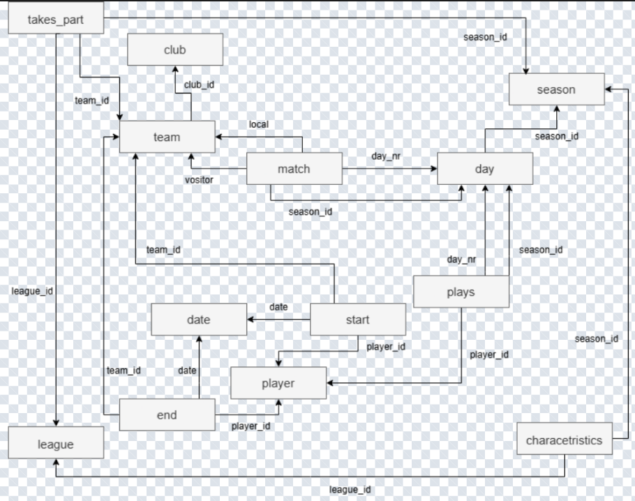
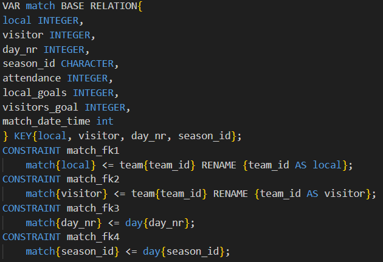

Description globale
Pour un projet universitaire pendant ma 1ere année de BUT j'ai conçu et créer une base de données relationnelle. En binome nous avons donc modélisé et implémenté une base de données pour gérer les résultats de championnats de football.
Les grandes étapes
- Etude du besoin et construction du diagramme de classe UML
- identification des classes, associations et attributs
- Traduction du diagramme en schéma relationnel avec le langage Tutorial D
- Rédaction d'un script pour créer la base.
Mes acquis
- Conception de base de données
- Esprit d'équipe
- Communication
Les outils utilisés
- Visual Paradigm
- Draw.io
- PostgreSQL
Diagramme UML

Partie du script de création
